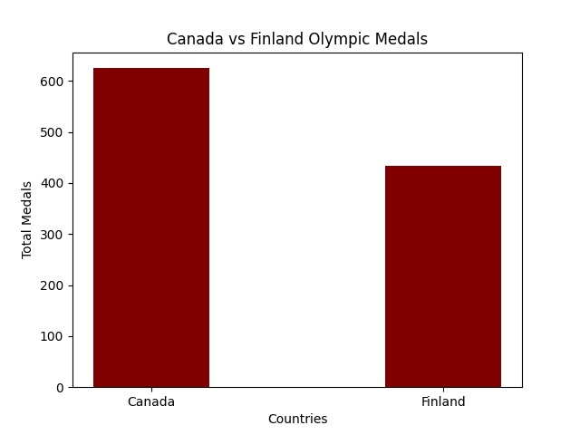
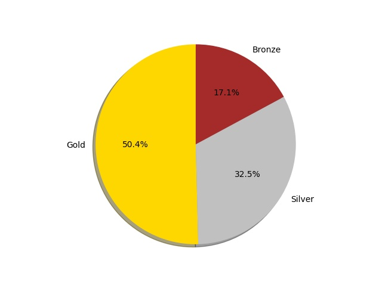
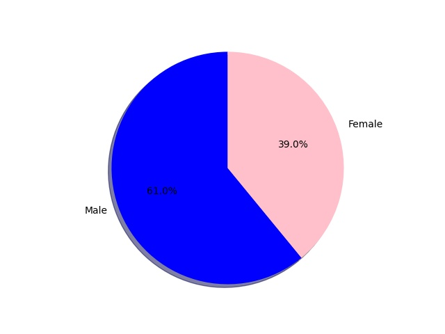

This is my Canada vs Finland Olympics Data Analysis
Data Point 1
Total number of medals won by Canada vs Finland
As we can see in the past few years, Canada has won huge number of medals as compared to Finland. Canada's performance in Olympics seems to be improved by time as it's leading on top of many countries including Finland.
Data Point 2
Total number of medals won by Canada vs Finland
As we can see from the pie chart, Canada has a total of 50.4% of gold medals won which is a huge achievement. It shows the consistency and dedication of the players.
Data Point 1
Total number of medals won by Canada vs Finland
The pie chart shows Canadian males have a way higher ratio of winning medals than females. According to me, more females should participate in Olympics as they are good at almost every games in Olympics.